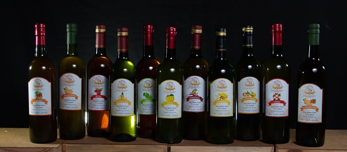

¿Donde Comprar?
Vinos Artesanales Mi Madre, los encuentras en:
- Restaurante Zazil, Hotel Honduras Maya, Tegucigalpa
- Casa Artesanal, City Mall, Tegucigalpa
- Abuela Chepita, Villa de San Antonio, Comayagua
- Chorros Termales, Hotel Balneario y Restaurante, Flores, Villa de San Antonio
- Floristería Danna, Barrio Torondón, Comayagua
- Restaurante La Baranda, Frente a Metro PLaza, Comayagua
- Casa Artesanal, City Mall, Tegucigalpa
- Reposteria Kamilles, haciendo postres y coctelería a base de nuestros vinos artesanales